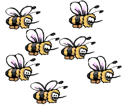

Poate câinii sunt cei mai buni prieteni ai omului, însã albinele ne þin în viaþã.
O singurã albinã produce numai a douãsprezecea parte dintr-o linguriþã de miere de-a lungul vieþii, însã, dacã ar dispãrea albinele, pierderea acestui aliment dulce ar fi cea mai micã dintre problemele noastre. Zeci de plante sunt polenizate exclusiv de cãtre albine ºi, dacã nu vrem sã mutãm polenul din floare în floare manual, avem nevoie de aceste insecte pentru a ne þine supermarketurile pline. O colonie de albine poate transporta polenul între 300 de milioane de flori într-o singurã zi, fertilizând 70% dintre plantele cel mai des consumate de cãtre om, pe întreaga planetã. Ele ajutã, de asemenea, plantele sã producã fructe mai bune ºi fac ca fructele ºi seminþele sã creascã mai mari. ªi nu numai fructele ºi legumele ar dispãrea din bucãtãriile noastre, dacã nu ar mai fi albinele. Animalele domestice se hrãnesc cu plante precum lucerna ºi trifoiul, ce sunt polenizate tot de cãtre albine.
Apocalipsa de dupã albine nu ar fi însã sfârºitul hranei în întregime. Leguminoase precum arahidele ºi soia se auto-polenizeazã, deci se pot reproduce fãrã ajutor din exterior. Cereale precum grâul ºi orezul îºi împrãºtie polenul cu ajutorul vântului, polenul smochinilor e transportat de viespi ºi agavele (ingredientul cheie din tequila) sunt polenizate de lilieci. Muºtele, pãsãrile, fluturii de zi ºi cei de noapte sunt asemenea polenizatori importanþi ºi ar putea menþine rezervele de caju, mango ºi papaya. Totuºi, dacã toþi stupii noºtri ar dispãrea, ar fi o foamete globalã, preþurile fructelor ºi ale legumelor ar creºte extrem de mult ºi ar trebui sã gãsim noi metode pentru a produce alimentele pe care le cunoaºtem ºi le savurãm.
Ce ne-ar mai rãmâne de mâncare dacã toate albinele ar muri?
ªtiaþi cã? Existã peste 19200 specii de albine: mai mult decât toate mamiferele ºi pãsãrile la un loc.
Pentru mai multe articole interesante apãsaþi aici: 